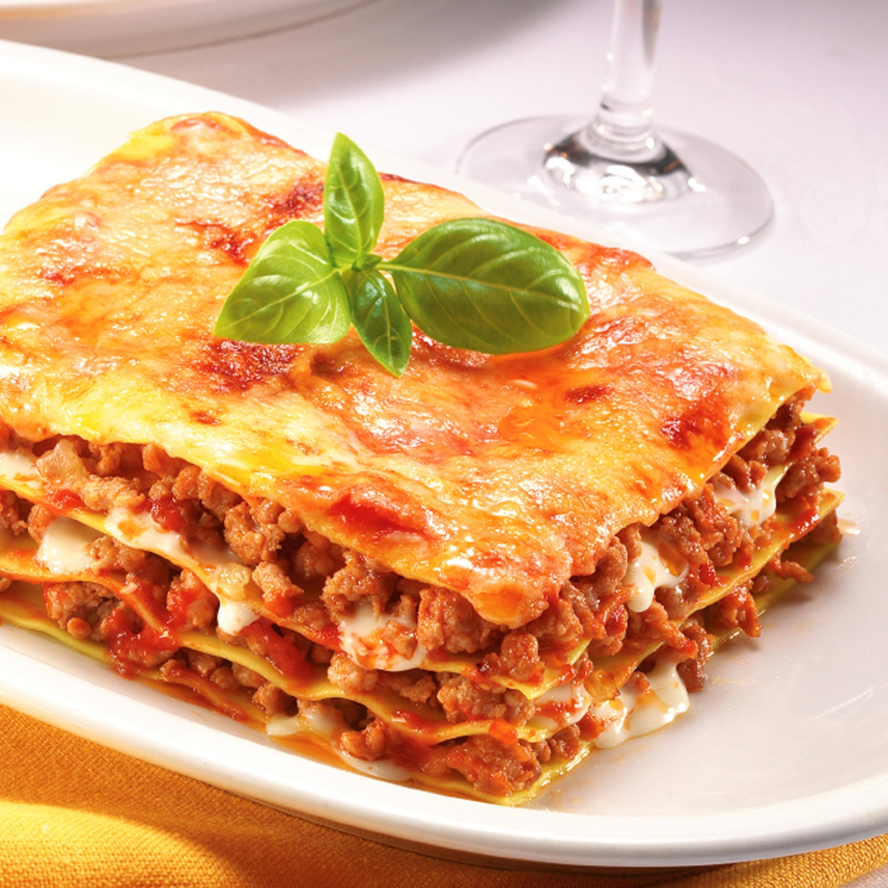

Lasagna

Description
Lasagna is a classic Italian dish made with layers of pasta sheets, meat or vegetables, and creamy sauce.
It is easy to prepare and perfect for relaxing mornings or evenings.
Ingredients
- 8–10 lasagna sheets
- 2 cups tomato sauce
- 1 cup mixed vegetables or minced meat
- 1 onion (chopped)
- 2 cloves garlic (chopped)
- 2 cups mozzarella cheese
- 1/2 cup parmesan cheese
- 1 cup white sauce or cream
- 2 tablespoons olive oil
- Salt and pepper to taste
- Mixed herbs or oregano for seasoning
Steps
- Cook the lasagna sheets according to the packet instructions and keep them aside.
Heat oil in a pan, cook onion and garlic, then add vegetables or meat and tomato sauce.
- In a baking dish, spread some sauce and layer lasagna sheets, sauce, white sauce, and cheese.
- Repeat the layers until all ingredients are used, then add extra cheese on top.
Bake in the oven until the cheese melts and turns golden brown, then serve hot.
- Bake in the oven until the cheese melts and turns golden brown, then serve hot.
Back to main page